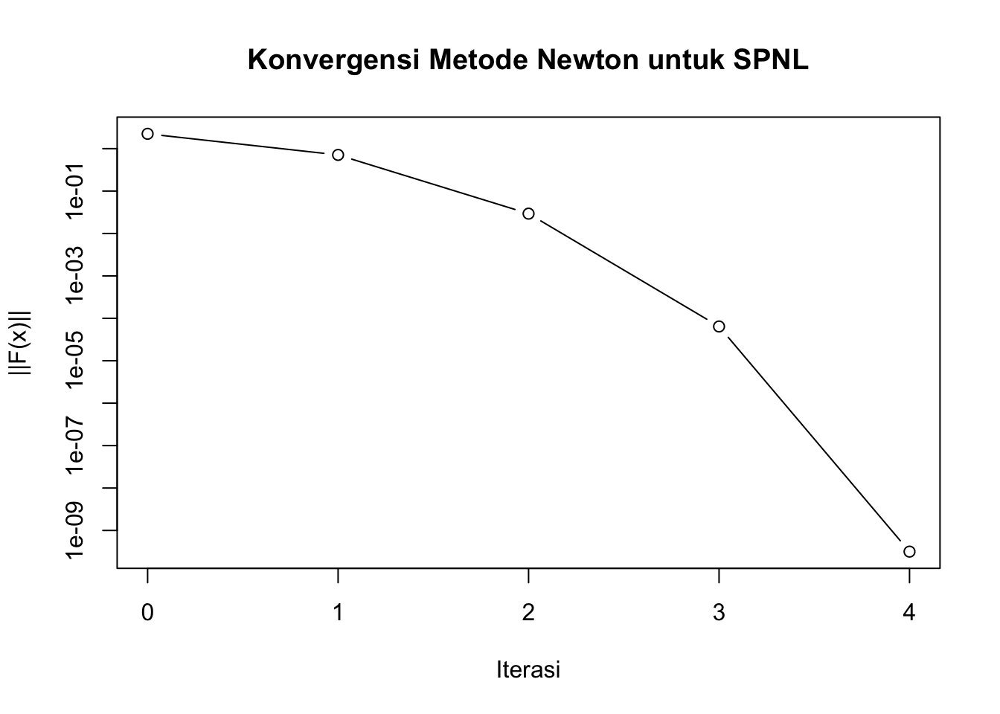
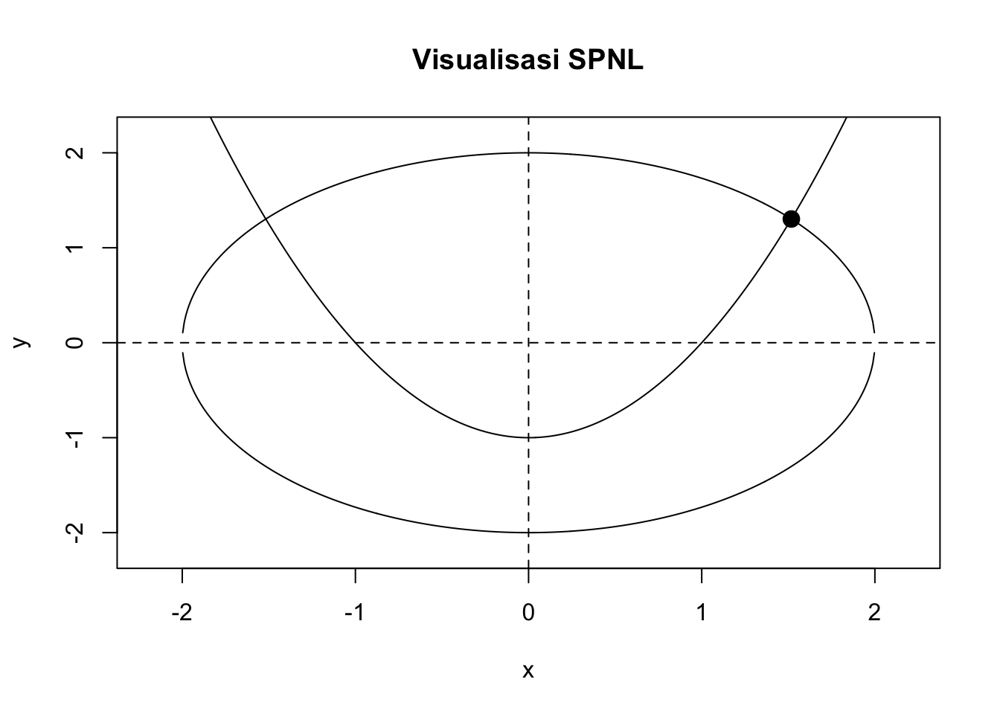

delta <- solve(J, -F)Modul Metode Numerik
Solusi Sistem Persamaan Nonlinear (SPNL)
Pendahuluan
Pada materi sebelumnya, kita telah mempelajari metode numerik untuk mencari akar suatu persamaan nonlinear, misalnya
\[ f(x)=0. \]
Metode seperti bisection, regula falsi, fixed point, secant, dan Newton-Raphson digunakan untuk memperoleh pendekatan numerik terhadap nilai (x) yang memenuhi persamaan tersebut.
Namun, dalam banyak permasalahan matematika, kita tidak hanya memiliki satu persamaan dengan satu peubah. Kita dapat memiliki beberapa persamaan nonlinear yang harus dipenuhi secara simultan.
Sebagai contoh,
\[ \begin{cases} x^2+y^2=4,\\ x^2-y=1. \end{cases} \]
Kita ingin menentukan nilai (x) dan (y) yang memenuhi kedua persamaan sekaligus.
Sistem seperti ini disebut Sistem Persamaan Nonlinear (SPNL) atau System of Nonlinear Equations.
Dalam modul ini kita akan mempelajari:
- konsep dasar SPNL;
- representasi SPNL dalam bentuk vektor;
- konsep Jacobian;
- metode Newton untuk SPNL;
- algoritma penyelesaian SPNL;
- implementasi metode Newton menggunakan R;
- visualisasi solusi;
- kriteria konvergensi dan penghentian;
- pengaruh tebakan awal;
- latihan dan eksperimen numerik.
1 Tujuan Pembelajaran
Setelah mempelajari materi ini, mahasiswa diharapkan mampu:
- menjelaskan pengertian sistem persamaan nonlinear;
- membedakan persamaan linear dan nonlinear;
- menuliskan SPNL dalam bentuk fungsi vektor;
- menentukan matriks Jacobian suatu SPNL;
- menjelaskan prinsip metode Newton untuk SPNL;
- menerapkan algoritma Newton untuk memperoleh solusi numerik;
- mengimplementasikan metode Newton menggunakan R;
- mengevaluasi konvergensi suatu solusi numerik;
- menjelaskan pengaruh tebakan awal terhadap hasil iterasi.
2 Konsep Dasar SPNL
2.1 Apa itu SPNL?
Sistem persamaan nonlinear terdiri atas beberapa persamaan yang melibatkan beberapa peubah, dengan setidaknya satu persamaan bersifat nonlinear.
Bentuk umum SPNL dengan (n) persamaan dan (n) peubah dapat ditulis sebagai
\[ \begin{aligned} f_1(x_1,x_2,\ldots,x_n)&=0,\\ f_2(x_1,x_2,\ldots,x_n)&=0,\\ &\vdots\\ f_n(x_1,x_2,\ldots,x_n)&=0. \end{aligned} \]
Tujuan kita adalah menemukan
\[ (x_1,x_2,\ldots,x_n) \]
yang memenuhi seluruh persamaan secara simultan.
2.2 Contoh
Perhatikan sistem berikut:
\[ \begin{cases} x^2+y^2-4=0,\\ x^2-y-1=0. \end{cases} \]
Definisikan
\[ f_1(x,y)=x^2+y^2-4 \]
dan
\[ f_2(x,y)=x^2-y-1. \]
Maka SPNL dapat ditulis sebagai
\[ \begin{cases} f_1(x,y)=0,\\ f_2(x,y)=0. \end{cases} \]
Secara geometris, solusi SPNL merupakan titik potong dari kurva-kurva yang dibentuk oleh masing-masing persamaan.
3 Persamaan Linear vs Nonlinear
Perhatikan dua sistem berikut.
3.0.1 Sistem linear
\[ \begin{cases} 2x+y=5,\\ x-y=1. \end{cases} \]
Tidak terdapat pangkat (x^2), (y^2), hasil kali (xy), fungsi eksponensial, logaritma, dan sebagainya.
3.0.2 Sistem nonlinear
\[ \begin{cases} x^2+y^2=4,\\ xy=1. \end{cases} \]
Sistem tersebut nonlinear karena terdapat (x^2), (y^2), dan (xy).
Beberapa bentuk yang umumnya menyebabkan persamaan menjadi nonlinear adalah:
- (x^2), (x^3), dan pangkat lainnya;
- (xy);
- ((x));
- ((x));
- (e^x);
- ((x));
- ();
- dan bentuk nonlinear lainnya.
4 Bentuk Vektor
Agar metode numerik dapat diterapkan dengan lebih sistematis, SPNL dituliskan dalam bentuk fungsi vektor.
Misalkan
\[ \mathbf{x} = \begin{bmatrix} x_1\\ x_2\\ \vdots\\ x_n \end{bmatrix} \]
dan
\[ \mathbf{F}(\mathbf{x}) = \begin{bmatrix} f_1(\mathbf{x})\\ f_2(\mathbf{x})\\ \vdots\\ f_n(\mathbf{x}) \end{bmatrix}. \]
Maka SPNL ditulis sebagai
\[ \boxed{\mathbf{F}(\mathbf{x})=\mathbf{0}} \]
dengan
\[ \mathbf{0} = \begin{bmatrix} 0\\ 0\\ \vdots\\ 0 \end{bmatrix}. \]
Misalnya,
\[ \begin{cases} x^2+y^2-4=0,\\ x^2-y-1=0 \end{cases} \]
dapat ditulis sebagai
\[ \mathbf{F}(x,y) = \begin{bmatrix} x^2+y^2-4\\ x^2-y-1 \end{bmatrix}. \]
Solusi yang dicari memenuhi
\[ \mathbf{F}(x,y)= \begin{bmatrix} 0\\ 0 \end{bmatrix}. \]
5 Mengapa Tidak Langsung Menggunakan Newton-Raphson Biasa?
Pada kasus satu persamaan,
\[ f(x)=0, \]
metode Newton-Raphson menggunakan
\[ x_{k+1} = x_k-\frac{f(x_k)}{f'(x_k)}. \]
Perhatikan bahwa kita hanya memiliki:
- satu peubah (x);
- satu fungsi (f(x));
- satu turunan (f’(x)).
Pada SPNL kita memiliki beberapa peubah dan beberapa fungsi.
Misalnya,
\[ \mathbf{F}(x,y) = \begin{bmatrix} f_1(x,y)\\ f_2(x,y) \end{bmatrix}. \]
Tidak ada lagi satu turunan (f’(x)).
Sebagai gantinya, kita menggunakan matriks Jacobian.
6 Matriks Jacobian
Jacobian merupakan generalisasi turunan pertama untuk fungsi yang memiliki beberapa peubah.
Untuk
\[ \mathbf{F}(\mathbf{x}) = \begin{bmatrix} f_1(\mathbf{x})\\ f_2(\mathbf{x})\\ \vdots\\ f_n(\mathbf{x}) \end{bmatrix}, \]
matriks Jacobian didefinisikan sebagai
\[ J(\mathbf{x}) = \begin{bmatrix} \frac{\partial f_1}{\partial x_1} & \frac{\partial f_1}{\partial x_2} & \cdots & \frac{\partial f_1}{\partial x_n} \\ \frac{\partial f_2}{\partial x_1} & \frac{\partial f_2}{\partial x_2} & \cdots & \frac{\partial f_2}{\partial x_n} \\ \vdots & \vdots & \ddots & \vdots \\ \frac{\partial f_n}{\partial x_1} & \frac{\partial f_n}{\partial x_2} & \cdots & \frac{\partial f_n}{\partial x_n} \end{bmatrix}. \]
Dengan kata lain, setiap elemen Jacobian adalah turunan parsial.
6.1 Contoh Jacobian
Diberikan
\[ \begin{cases} f_1(x,y)=x^2+y^2-4,\\ f_2(x,y)=x^2-y-1. \end{cases} \]
Turunan parsialnya adalah
\[ \frac{\partial f_1}{\partial x}=2x, \qquad \frac{\partial f_1}{\partial y}=2y, \]
dan
\[ \frac{\partial f_2}{\partial x}=2x, \qquad \frac{\partial f_2}{\partial y}=-1. \]
Sehingga Jacobian-nya adalah
\[ \boxed{ J(x,y)= \begin{bmatrix} 2x & 2y\\ 2x & -1 \end{bmatrix} } \]
7 Ide Dasar Metode Newton untuk SPNL
Ide dasarnya masih sama dengan Newton-Raphson satu variabel:
Gunakan informasi lokal mengenai fungsi untuk memperkirakan posisi solusi berikutnya.
Pada satu variabel, kita menggunakan garis singgung.
Pada beberapa variabel, kita menggunakan aproksimasi linear lokal.
Untuk suatu tebakan (_k),
\[ \mathbf{F}(\mathbf{x}_k+\Delta\mathbf{x}) \approx \mathbf{F}(\mathbf{x}_k) + J(\mathbf{x}_k)\Delta\mathbf{x}. \]
Kita ingin mencari (_{k+1}) sehingga
\[ \mathbf{F}(\mathbf{x}_{k+1})\approx\mathbf{0}. \]
Dengan demikian,
\[ \mathbf{F}(\mathbf{x}_k) + J(\mathbf{x}_k)\Delta\mathbf{x} \approx \mathbf{0}. \]
Maka
\[ \boxed{ J(\mathbf{x}_k)\Delta\mathbf{x} = -\mathbf{F}(\mathbf{x}_k) } \]
dan setelah () diperoleh,
\[ \boxed{ \mathbf{x}_{k+1} = \mathbf{x}_k+\Delta\mathbf{x}. } \]
Inilah bentuk utama metode Newton untuk SPNL.
8 Hal Penting: Tidak Perlu Menghitung Invers Jacobian
Secara teoritis, kita dapat menulis
\[ \Delta\mathbf{x} = -J(\mathbf{x}_k)^{-1}\mathbf{F}(\mathbf{x}_k). \]
Namun, dalam implementasi numerik kita tidak dianjurkan menghitung invers matriks secara eksplisit.
Kita cukup menyelesaikan sistem linear
\[ J(\mathbf{x}_k)\Delta\mathbf{x} = -\mathbf{F}(\mathbf{x}_k). \]
Dalam R, sistem tersebut dapat diselesaikan dengan operator:
\[ J %*% delta = -F \]
Secara praktis kita menggunakan:
Pendekatan ini lebih sesuai dengan praktik komputasi numerik.
9 Algoritma Newton untuk SPNL
Diberikan SPNL
\[ \mathbf{F}(\mathbf{x})=\mathbf{0}. \]
Pilih:
- tebakan awal (_0);
- toleransi ();
- jumlah iterasi maksimum.
Kemudian lakukan:
Langkah 1. Hitung
\[ \mathbf{F}(\mathbf{x}_k). \]
Langkah 2. Hitung Jacobian
\[ J(\mathbf{x}_k). \]
Langkah 3. Selesaikan
\[ J(\mathbf{x}_k)\Delta\mathbf{x} = -\mathbf{F}(\mathbf{x}_k). \]
Langkah 4. Perbarui solusi:
\[ \mathbf{x}_{k+1} = \mathbf{x}_k+\Delta\mathbf{x}. \]
Langkah 5. Periksa kriteria berhenti.
Misalnya,
\[ \|\mathbf{F}(\mathbf{x}_{k+1})\|<\varepsilon. \]
Jika belum memenuhi kriteria, kembali ke Langkah 1.
10 Contoh Perhitungan
Pertimbangkan SPNL
\[ \begin{cases} x^2+y^2-4=0,\\ x^2-y-1=0. \end{cases} \]
Kita telah memperoleh
\[ \mathbf{F}(x,y) = \begin{bmatrix} x^2+y^2-4\\ x^2-y-1 \end{bmatrix} \]
dan
\[ J(x,y) = \begin{bmatrix} 2x & 2y\\ 2x & -1 \end{bmatrix}. \]
Misalkan tebakan awal adalah
\[ \mathbf{x}_0= \begin{bmatrix} 1\\ 1 \end{bmatrix}. \]
Hitung fungsi:
\[ \mathbf{F}(1,1) = \begin{bmatrix} 1+1-4\\ 1-1-1 \end{bmatrix} = \begin{bmatrix} -2\\ -1 \end{bmatrix}. \]
Jacobian:
\[ J(1,1) = \begin{bmatrix} 2&2\\ 2&-1 \end{bmatrix}. \]
Kita kemudian menyelesaikan
\[ \begin{bmatrix} 2&2\\ 2&-1 \end{bmatrix} \begin{bmatrix} \Delta x\\ \Delta y \end{bmatrix} = - \begin{bmatrix} -2\\ -1 \end{bmatrix}. \]
atau
\[ \begin{bmatrix} 2&2\\ 2&-1 \end{bmatrix} \begin{bmatrix} \Delta x\\ \Delta y \end{bmatrix} = \begin{bmatrix} 2\\ 1 \end{bmatrix}. \]
Diperoleh
\[ \Delta x=0.5, \qquad \Delta y=0.5. \]
Maka
\[ \mathbf{x}_1 = \begin{bmatrix} 1\\ 1 \end{bmatrix} + \begin{bmatrix} 0.5\\ 0.5 \end{bmatrix} = \begin{bmatrix} 1.5\\ 1.5 \end{bmatrix}. \]
Proses ini kemudian diulangi sampai diperoleh solusi yang cukup akurat.
11 Implementasi dengan R
Kita dapat mendefinisikan fungsi dan Jacobian sebagai berikut.
F <- function(x) {
c(
x[1]^2 + x[2]^2 - 4,
x[1]^2 - x[2] - 1
)
}
J <- function(x) {
matrix(
c(
2*x[1], 2*x[2],
2*x[1], -1
),
nrow = 2,
byrow = TRUE
)
}Periksa fungsi pada tebakan awal:
x <- c(1, 1)
F(x)[1] -2 -1J(x) [,1] [,2]
[1,] 2 2
[2,] 2 -112 Fungsi Newton untuk SPNL
Selanjutnya kita membuat fungsi umum sederhana untuk metode Newton.
newton_spnl <- function(F, J, x0, tol = 1e-8, max_iter = 100) {
x <- x0
history <- data.frame(
iter = 0,
x1 = x[1],
x2 = x[2],
norm_F = sqrt(sum(F(x)^2))
)
for (k in 1:max_iter) {
Fx <- F(x)
Jx <- J(x)
# Menyelesaikan J(x) delta = -F(x)
delta <- solve(Jx, -Fx)
# Update
x_new <- x + delta
# Simpan hasil
history <- rbind(
history,
data.frame(
iter = k,
x1 = x_new[1],
x2 = x_new[2],
norm_F = sqrt(sum(F(x_new)^2))
)
)
# Kriteria berhenti
if (sqrt(sum(F(x_new)^2)) < tol) {
return(
list(
solution = x_new,
iterations = k,
history = history,
converged = TRUE
)
)
}
x <- x_new
}
list(
solution = x,
iterations = max_iter,
history = history,
converged = FALSE
)
}Jalankan metode dengan tebakan awal
\[ (x_0,y_0)=(1,1). \]
hasil <- newton_spnl(
F = F,
J = J,
x0 = c(1, 1)
)
hasil$solution[1] 1.517490 1.302776Jumlah iterasi:
hasil$iterations[1] 4Status konvergensi:
hasil$converged[1] TRUE13 Melihat Proses Iterasi
Riwayat iterasi dapat dilihat menggunakan:
hasil$history iter x1 x2 norm_F
1 0 1.000000 1.000000 2.236068e+00
2 1 1.666667 1.333333 7.114582e-01
3 2 1.524242 1.303030 2.934335e-02
4 3 1.517505 1.302776 6.424346e-05
5 4 1.517490 1.302776 3.166258e-10Kolom norm_F menunjukkan ukuran residual:
\[ \|\mathbf{F}(\mathbf{x}_k)\|. \]
Semakin kecil nilai tersebut, semakin dekat solusi terhadap akar SPNL.
Kita dapat memvisualisasikan penurunan residual.
plot(
hasil$history$iter,
hasil$history$norm_F,
type = "b",
log = "y",
xlab = "Iterasi",
ylab = "||F(x)||",
main = "Konvergensi Metode Newton untuk SPNL"
)
Penggunaan skala logaritmik pada sumbu vertikal membantu melihat penurunan residual secara lebih jelas.
14 Memeriksa Solusi
Solusi numerik yang diperoleh harus dikembalikan ke persamaan awal.
hasil$solution[1] 1.517490 1.302776Kemudian:
F(hasil$solution)[1] 2.238885e-10 2.238880e-10Jika metode telah konvergen dengan baik, kedua komponen residual akan sangat dekat dengan nol.
Kita juga dapat menghitung norm residual:
sqrt(sum(F(hasil$solution)^2))[1] 3.166258e-1015 Visualisasi Geometris
Untuk SPNL dengan dua peubah, kita dapat memahami solusi secara geometris.
Persamaan pertama:
\[ x^2+y^2-4=0 \]
merupakan lingkaran dengan pusat ((0,0)) dan radius (2).
Persamaan kedua:
\[ x^2-y-1=0 \]
dapat ditulis sebagai
\[ y=x^2-1. \]
Jadi kita mencari titik perpotongan antara lingkaran dan parabola.
x_grid <- seq(-2.2, 2.2, length.out = 500)
y_circle <- sqrt(4 - x_grid^2)
y_circle_lower <- -sqrt(4 - x_grid^2)
y_parabola <- x_grid^2 - 1
plot(
x_grid,
y_circle,
type = "l",
xlab = "x",
ylab = "y",
ylim = c(-2.2, 2.2),
main = "Visualisasi SPNL"
)
lines(x_grid, y_circle_lower)
lines(x_grid, y_parabola)
points(
hasil$solution[1],
hasil$solution[2],
pch = 19,
cex = 1.5
)
abline(h = 0, v = 0, lty = 2)
Secara geometris, solusi SPNL adalah titik perpotongan kurva.
16 Mengapa Tebakan Awal Penting?
Berbeda dengan metode bisection yang memiliki sifat bracketing, metode Newton tidak selalu menjamin konvergensi untuk sembarang tebakan awal.
Misalnya kita mencoba beberapa tebakan awal:
starts <- list(
c(1, 1),
c(-1, 1),
c(2, 1),
c(-2, 1)
)
lapply(
starts,
function(x0) {
hasil <- newton_spnl(F, J, x0)
c(
x1 = hasil$solution[1],
x2 = hasil$solution[2],
iterasi = hasil$iterations,
konvergen = hasil$converged
)
}
)[[1]]
x1 x2 iterasi konvergen
1.517490 1.302776 4.000000 1.000000
[[2]]
x1 x2 iterasi konvergen
-1.517490 1.302776 4.000000 1.000000
[[3]]
x1 x2 iterasi konvergen
1.517490 1.302776 4.000000 1.000000
[[4]]
x1 x2 iterasi konvergen
-1.517490 1.302776 4.000000 1.000000 Hal ini menunjukkan bahwa satu SPNL dapat memiliki lebih dari satu solusi.
Selain itu, solusi yang diperoleh Newton dapat bergantung pada tebakan awal.
17 Beberapa Solusi
Untuk sistem
\[ \begin{cases} x^2+y^2-4=0,\\ x^2-y-1=0, \end{cases} \]
kita dapat mengeliminasi (y):
\[ y=x^2-1. \]
Substitusi ke persamaan pertama:
\[ x^2+(x^2-1)^2-4=0. \]
Dengan demikian, sistem dapat memiliki beberapa solusi.
Coba gunakan beberapa tebakan awal yang berbeda:
initial_values <- list(
c(1, 1),
c(-1, 1),
c(1, -1),
c(-1, -1),
c(2, 2),
c(-2, 2)
)
solutions <- lapply(
initial_values,
function(x0) {
res <- newton_spnl(F, J, x0)
data.frame(
x0 = paste(x0, collapse = ", "),
x = res$solution[1],
y = res$solution[2],
iterasi = res$iterations,
konvergen = res$converged
)
}
)
do.call(rbind, solutions) x0 x y iterasi konvergen
1 1, 1 1.517490 1.302776 4 TRUE
2 -1, 1 -1.517490 1.302776 4 TRUE
3 1, -1 8.498013 -2.302776 100 FALSE
4 -1, -1 -8.498013 -2.302776 100 FALSE
5 2, 2 1.517490 1.302776 4 TRUE
6 -2, 2 -1.517490 1.302776 4 TRUEEksperimen ini penting untuk memahami bahwa metode numerik tidak hanya berkaitan dengan memperoleh angka, tetapi juga dengan memahami perilaku algoritma.
18 Kriteria Berhenti
Dalam metode Newton SPNL, terdapat beberapa kemungkinan kriteria berhenti.
18.1 Berdasarkan residual
Kita dapat menggunakan
\[ \|\mathbf{F}(\mathbf{x}_k)\|<\varepsilon. \]
Artinya, nilai fungsi sudah cukup dekat dengan nol.
Dalam R:
sqrt(sum(F(x)^2)) < 1e-8[1] FALSE18.2 Berdasarkan perubahan solusi
Kita juga dapat menggunakan
\[ \|\mathbf{x}_{k+1}-\mathbf{x}_k\|<\varepsilon. \]
Kriteria ini menunjukkan bahwa iterasi sudah menghasilkan perubahan solusi yang sangat kecil.
Dalam implementasi:
sqrt(sum((x_new - x)^2)) < tol18.3 Mengapa residual lebih penting?
Perubahan solusi yang kecil belum tentu berarti kita telah mendapatkan akar.
Misalnya, algoritma dapat berhenti karena perubahan (x) sangat kecil, tetapi
\[ \|\mathbf{F}(\mathbf{x})\| \]
masih besar.
Oleh karena itu, dalam praktik kita sebaiknya memeriksa keduanya:
\[ \|\mathbf{F}(\mathbf{x}_k)\|<\varepsilon \]
dan
\[ \|\mathbf{x}_{k+1}-\mathbf{x}_k\|<\varepsilon. \]
19 Permasalahan Jacobian Singular
Pada setiap iterasi metode Newton kita harus menyelesaikan
\[ J(\mathbf{x}_k)\Delta\mathbf{x} = -\mathbf{F}(\mathbf{x}_k). \]
Jika Jacobian singular atau hampir singular, penyelesaian sistem linear dapat bermasalah.
Dalam R, kondisi ini dapat diperiksa menggunakan:
det(J(c(1, 1)))[1] -6atau dengan memeriksa condition number:
kappa(J(c(1, 1)))[1] 1.416667Nilai kappa() yang sangat besar menunjukkan bahwa sistem dapat bersifat ill-conditioned.
Hal ini merupakan salah satu alasan mengapa metode Newton dapat mengalami kegagalan meskipun secara teoritis terlihat sederhana.
20 Newton SPNL dalam Bentuk Algoritma
Secara ringkas:
Input:
F(x)
J(x)
tebakan awal x0
toleransi epsilon
maksimum iterasi
Set x = x0
Untuk k = 1, 2, ..., max_iter:
Hitung F(x)
Jika ||F(x)|| < epsilon:
berhenti
Hitung J(x)
Selesaikan:
J(x) delta = -F(x)
Update:
x_new = x + delta
Jika ||x_new - x|| < epsilon:
berhenti
x = x_new
Jika tidak berhenti:
metode dianggap belum konvergen21 Perbandingan dengan Newton-Raphson Satu Variabel
| Aspek | Newton satu variabel | Newton SPNL |
|---|---|---|
| Peubah | (x) | () |
| Fungsi | (f(x)) | (()) |
| Turunan | (f’(x)) | Jacobian (J()) |
| Update | (x_{k+1}=x_k-) | (_{k+1}=_k+) |
| Langkah utama | Pembagian | Penyelesaian sistem linear |
| Solusi | Skalar | Vektor |
| Geometri | Titik pada garis | Titik perpotongan kurva/surface |
Ide dasarnya tetap sama:
Evaluasi fungsi → gunakan informasi lokal → lakukan koreksi → ulangi.
22 Eksperimen: Pengaruh Tebakan Awal
Mahasiswa dapat melakukan eksperimen dengan beberapa tebakan awal.
grid <- expand.grid(
x0 = seq(-2, 2, by = 0.5),
y0 = seq(-2, 2, by = 0.5)
)
results <- lapply(
1:nrow(grid),
function(i) {
x0 <- c(grid$x0[i], grid$y0[i])
res <- tryCatch(
newton_spnl(F, J, x0),
error = function(e) NULL
)
if (is.null(res)) {
return(
data.frame(
x0 = x0[1],
y0 = x0[2],
x = NA,
y = NA,
iterasi = NA,
konvergen = FALSE
)
)
}
data.frame(
x0 = x0[1],
y0 = x0[2],
x = res$solution[1],
y = res$solution[2],
iterasi = res$iterations,
konvergen = res$converged
)
}
)
results <- do.call(rbind, results)
head(results) x0 y0 x y iterasi konvergen
1 -2.0 -2 0.5986110 -2.302776 100 FALSE
2 -1.5 -2 2.1803156 -2.302776 100 FALSE
3 -1.0 -2 -2.1119159 -2.302776 100 FALSE
4 -0.5 -2 0.7818358 -2.302776 100 FALSE
5 0.0 -2 NA NA NA FALSE
6 0.5 -2 -0.7818358 -2.302776 100 FALSEMahasiswa dapat mengamati:
- Apakah semua tebakan awal menghasilkan solusi?
- Apakah semua tebakan awal menghasilkan solusi yang sama?
- Berapa iterasi yang diperlukan?
- Apakah terdapat tebakan awal yang menyebabkan kegagalan?
23 Latihan 1 — Menentukan Jacobian
Diberikan SPNL
\[ \begin{cases} x^2+y^2-5=0,\\ e^x+y-1=0. \end{cases} \]
Tentukan:
- fungsi (f_1(x,y));
- fungsi (f_2(x,y));
- vektor fungsi ((x,y));
- matriks Jacobian (J(x,y)).
24 Latihan 2 — Implementasi Newton
Gunakan SPNL
\[ \begin{cases} x^2+y^2-5=0,\\ x-y-1=0. \end{cases} \]
Lakukan:
- tentukan Jacobian;
- gunakan tebakan awal ((1,1));
- implementasikan metode Newton menggunakan R;
- gunakan toleransi (10^{-8});
- tampilkan tabel iterasi;
- tentukan solusi akhirnya;
- periksa residual pada solusi.
25 Latihan 3 — Eksperimen Tebakan Awal
Gunakan sistem
\[ \begin{cases} x^2+y^2-4=0,\\ x^2-y-1=0. \end{cases} \]
Gunakan tebakan awal:
\[ (-2,-2),(-2,2),(2,-2),(2,2),(1,1),(-1,1). \]
Bandingkan hasilnya.
Buat tabel:
| Tebakan awal | Solusi | Iterasi | Konvergen |
|---|---|---|---|
| ((-2,-2)) | |||
| ((-2,2)) | |||
| ((2,-2)) | |||
| ((2,2)) | |||
| ((1,1)) | |||
| ((-1,1)) |
Kemudian jawab:
Mengapa tebakan awal yang berbeda dapat menghasilkan solusi yang berbeda?
26 Latihan 4 — Visualisasi
Untuk sistem
\[ \begin{cases} x^2+y^2-4=0,\\ x^2-y-1=0, \end{cases} \]
buat grafik kedua kurva dan tandai solusi yang diperoleh metode Newton.
Kemudian jelaskan secara geometris arti dari solusi SPNL.
27 Latihan 5 — Kasus Tiga Peubah
Pertimbangkan sistem:
\[ \begin{cases} x+y+z-3=0,\\ x^2+y^2+z^2-5=0,\\ e^x+y-z-1=0. \end{cases} \]
Tentukan:
- ((x,y,z));
- Jacobian (J(x,y,z));
- implementasi Newton dalam R;
- solusi numeriknya;
- residual pada solusi;
- jumlah iterasi yang diperlukan.
28 Aktivitas Eksplorasi
Gunakan metode Newton untuk SPNL dengan beberapa tebakan awal.
Mahasiswa diminta membuat eksperimen untuk menjawab pertanyaan berikut:
- Apakah metode selalu konvergen?
- Apakah solusi selalu sama?
- Apa yang terjadi jika tebakan awal sangat jauh dari solusi?
- Apa yang terjadi ketika Jacobian mendekati singular?
- Bagaimana pengaruh toleransi terhadap jumlah iterasi?
- Apakah solusi numerik benar-benar memenuhi persamaan awal?
Tuliskan hasil eksperimen dalam bentuk tabel dan berikan interpretasi.
29 Ringkasan
Sistem Persamaan Nonlinear dapat dituliskan dalam bentuk
\[ \boxed{\mathbf{F}(\mathbf{x})=\mathbf{0}}. \]
Metode Newton untuk SPNL menggunakan pendekatan linear lokal:
\[ \mathbf{F}(\mathbf{x}_k+\Delta\mathbf{x}) \approx \mathbf{F}(\mathbf{x}_k) + J(\mathbf{x}_k)\Delta\mathbf{x}. \]
Koreksi () diperoleh dengan menyelesaikan
\[ \boxed{ J(\mathbf{x}_k)\Delta\mathbf{x} = -\mathbf{F}(\mathbf{x}_k) } \]
kemudian solusi diperbarui:
\[ \boxed{ \mathbf{x}_{k+1} = \mathbf{x}_k+\Delta\mathbf{x}. } \]
Hal-hal penting yang perlu diperhatikan adalah:
- tebakan awal;
- Jacobian;
- penyelesaian sistem linear;
- kriteria berhenti;
- residual;
- kemungkinan lebih dari satu solusi;
- kemungkinan kegagalan konvergensi.
Secara konseptual, metode Newton untuk SPNL dapat diringkas sebagai:
\[ \boxed{ \text{tebak} \rightarrow \text{evaluasi} \rightarrow \text{koreksi} \rightarrow \text{update} \rightarrow \text{periksa} \rightarrow \text{ulang} } \]
30 Pertanyaan Refleksi
- Apa perbedaan utama antara akar persamaan nonlinear dan solusi SPNL?
- Mengapa turunan (f’(x)) digantikan oleh Jacobian?
- Mengapa pada metode Newton SPNL kita menyelesaikan sistem linear?
- Mengapa kita tidak perlu menghitung invers Jacobian secara eksplisit?
- Apa arti geometris solusi SPNL?
- Mengapa tebakan awal dapat memengaruhi solusi?
- Mengapa residual perlu diperiksa setelah algoritma berhenti?
- Apa yang terjadi jika Jacobian singular?
- Mengapa suatu SPNL dapat memiliki lebih dari satu solusi?
- Apa perbedaan metode Newton SPNL dengan metode bisection pada persamaan satu variabel?